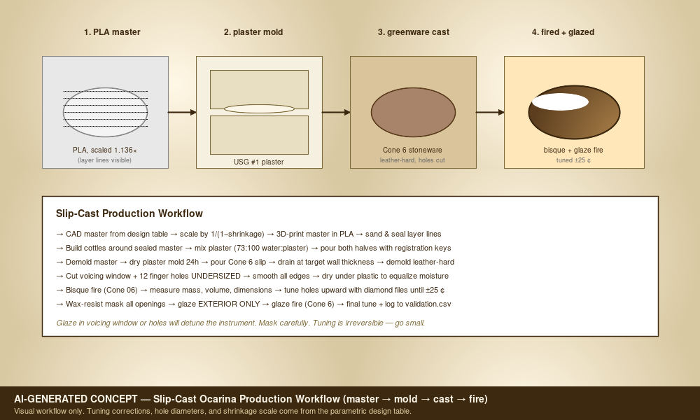
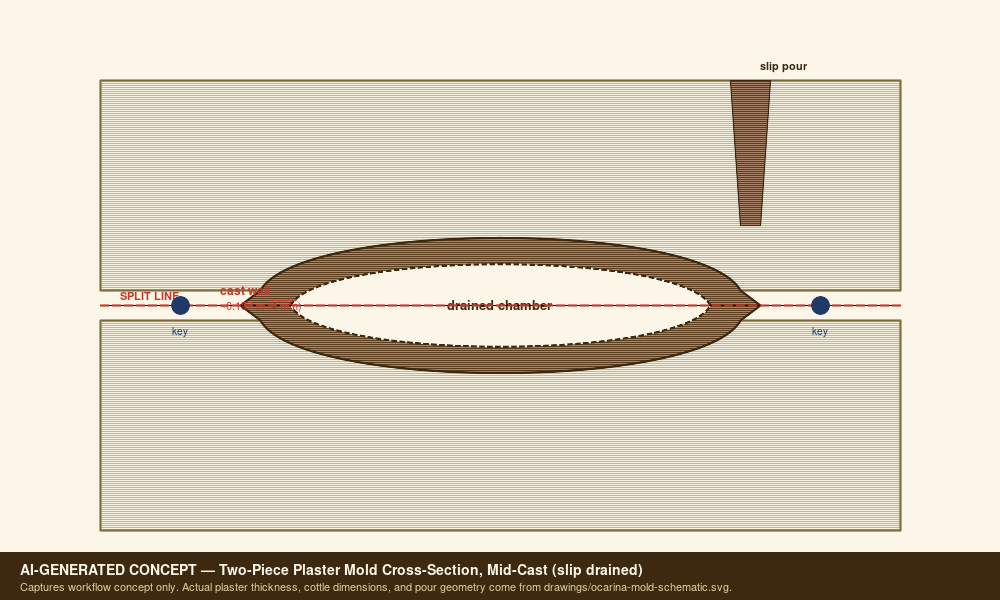

What this is
(section missing in design.md)
The design
Ocarinas behave primarily as Helmholtz resonators:
```text f = c/(2*pi) * sqrt(A_open/(V_chamber * L_eff)) ```
Unlike a transverse flute or Native American style flute, pitch is driven by chamber volume and total open-hole area, not tone-hole distance along a bore. Hole position is still important for ergonomics, grip, and fingering logic.
The build
Ocarina Assembly Manual
Scope
This manual covers a slip-cast or press-molded ceramic ocarina based on `docs/Ocarina.xlsx`. It is written for prototype builds where the first goal is repeatable tone and validated tuning, not decorative finish.
Tools
- CAD package for master design.
- 3D printer and sanding/sealing supplies.
- Cottle boards, plaster mixing bucket, scale, mold soap, and clamps.
- Stoneware slip or workable clay body.
- Small hole cutters, drill bits, needle tools, loop tools, ribs, sponge, and fettling knife.
- Chromatic tuner, microphone, calipers, graduated syringe or water-fill vessel.
- Diamond needle files or fine diamond burrs.
- Wax resist, glaze, and kiln access.
Process
1. **Set design inputs** - Confirm target ocarina size, chamber volume, voicing window, wall thickness, clay body, and shrinkage. - Create a build ID before CAD begins.
2. **Model the master** - Model the body as a controlled-volume vessel. - Include split-line planning, registration features, and a fipple strategy. - Scale the master by `1/(1 - measured_shrinkage)`.
3. **Print and finish the master** - Print the master with enough wall strength to survive mold making. - Sand layer lines and seal the surface. - Mark datums: centerline, mouthpiece axis, split plane, and hole reference side.
4. **Make the mold** - Apply release to the sealed master and cottle surfaces. - Pour plaster with at least 1.5 inches around the master where practical. - Add registration keys and dry the mold fully before casting.
5. **Cast or press the body** - For slip casting, pour slip, wait for target wall buildup, drain, and demold at leather-hard stage. - For press molding, press even clay slabs into both mold halves and join with scored slip. - Measure sample wall thickness at a noncritical trimmed area.
6. **Cut fipple and holes** - Establish the windway first. - Cut the labium cleanly and test blow before the body fully dries. - Cut finger holes undersized.
7. **Dry slowly** - Dry under plastic until moisture equalizes. - Watch the mouthpiece and seam areas for cracks.
8. **Bisque fire** - Bisque to the clay body's recommended schedule. - Measure mass, volume, hole diameters, and frequencies.
9. **Tune after bisque** - Enlarge holes to raise pitch. - Refine the fipple only in small steps. - Record measured frequency and cents error after each change.
10. **Glaze** - Wax resist the windway, labium, holes, and any interior opening. - Keep glaze away from the acoustic edges.
11. **Final fire and validation** - Fire to the chosen glaze schedule. - Re-measure all tuning points. - Save final dimensions and tuning data back into the validation log.
Failure Modes To Watch
- Weak or no tone: windway too tall, labium too blunt, air jet missing edge.
- Pitch too flat: chamber too large, open area too small, or neck length too long.
- Pitch too sharp: chamber too small, open area too large, or over-filed holes.
- Warped mouthpiece: uneven drying or thin unsupported fipple geometry.
- Glaze-choked note: glaze reduced hole or windway opening.


The numbers
BOM
| item_id | category | item | qty | spec | make_buy | estimated_cost | source_note | drawing_ref | notes |
|---|---|---|---|---|---|---|---|---|---|
| OCA-BOM-001 | Master | 3D printed body master | 1 set | PLA or resin printed top and bottom master | Make | $2-5 | Workbook estimate not date-checked | OCA-DRW-001 | Scale master for measured clay shrinkage. |
| OCA-BOM-002 | Mold | #1 pottery plaster | 10 lb | USG #1 pottery plaster or equivalent | Buy | $15-25 | Workbook estimate not date-checked | OCA-DRW-002 | Enough for several small mold sets depending on cottle size. |
| OCA-BOM-003 | Clay | Cone 6 stoneware slip or clay body | 25 lb | Slip casting body or press-moldable clay | Buy | $20-35 | Workbook estimate not date-checked | OCA-DRW-003 | Record batch and measured shrinkage. |
| OCA-BOM-004 | Finish | Cone 6 exterior glaze | 3-5 pints | Food-safe or durable ceramic glaze | Buy | $30-60 | Workbook estimate not date-checked | OCA-DRW-004 | Mask fipple, holes, and interior. |
| OCA-BOM-005 | Tuning | Diamond needle files | 1 set | Assorted profiles | Buy | $10-20 | Workbook estimate not date-checked | OCA-DRW-005 | Needed after bisque and final fire. |
| OCA-BOM-006 | Tuning | Chromatic tuner or analysis app | 1 | Cent-accurate tuner | Buy | $15-30 | Workbook estimate not date-checked | OCA-VAL-001 | Use same app/settings across prototypes. |
| OCA-BOM-007 | Mold | Mold soap or release | 1 bottle | Murphy's oil soap or mold release | Buy | $5-10 | Workbook estimate not date-checked | OCA-DRW-002 | For sealed master and plaster parting surfaces. |
| OCA-BOM-008 | Firing | Bisque and glaze firing | per load | Cone 06 bisque and Cone 6 glaze | Buy | $20-50/load | Workbook estimate not date-checked | OCA-VAL-002 | Record firing schedule and kiln location. |
| OCA-BOM-009 | Masking | Wax resist | 1 small jar | Brushable wax resist | Buy | TBD | Add supplier/date before purchase | OCA-DRW-004 | Protect tuning-critical holes and fipple. |
| OCA-BOM-010 | Measurement | Graduated syringe or burette | 1 | Water-fill volume measurement | Buy | TBD | Add supplier/date before purchase | OCA-VAL-003 | Needed for chamber volume validation. |
Cut list
| cut_id | part | qty | rough_dimensions_in | final_dimensions_in | material | orientation | operation | tolerance_in | yield_or_offcut | notes |
|---|---|---|---|---|---|---|---|---|---|---|
| OCA-CUT-001 | Master body upper half (3D-printed) | 1 | 4.50 x 3.50 x 2.50 envelope | master scale = 1/(1-shrinkage); for 12% shrinkage = 1.136x fired body | PLA or sealable resin | X along mouthpiece axis; Z up; mark split-line and chamber datum | Print, sand layer lines, fill voids, seal/sand, sign with build ID | +/-0.010 | Save offcut sprues for shrinkage coupons | Master scale factor must be re-derived from MEASURED clay shrinkage before final master. |
| OCA-CUT-002 | Master body lower half (3D-printed) | 1 | 4.50 x 3.50 x 2.50 envelope | mirror of OCA-CUT-001 | PLA or sealable resin | X along mouthpiece axis; Z up; mark split-line | Print, sand, fill, seal | +/-0.010 | Reuse offcut sprues for shrinkage coupons | Same scale factor as OCA-CUT-001. |
| OCA-CUT-003 | Wooden cottle boards (mold making) | 4 | 8 x 6 x 0.75 each | 7.50 x 5.50 x 0.75 each | Melamine-faced MDF or sealed plywood | Smooth face inward; mark inner clamping zone | Cut, edge-seal, drill clamping holes | +/-0.030 | One sheet of 24 x 18 x 0.75 yields all 4 | Clean parting wax/release before each pour. |
| OCA-CUT-004 | Plaster mother mold half (poured) | 2 | 7.50 x 5.50 x 2.00 each | 7.50 x 5.50 x 1.50-1.75 each (around master) | USG #1 pottery plaster (or equiv.) | Pour with master keyed to first half; second half over registration | Mix to 73:100 water:plaster (by weight); 2-min slake; pour around sealed master | +/-0.060 | Trim spew/edge after demold; recover small offcuts as test slabs | Min 1.50 in plaster around master where practical for stiffness. |
| OCA-CUT-005 | Greenware vessel (slip-cast) | 1 per pour | ~3.95 x 3.07 x 2.20 (master cavity wet) | ~3.50 x 2.72 x 1.95 fired (12% shrink) | Cone 6 stoneware casting slip | Mouthpiece axis along master split | Slip pour > drain at target wall (~0.16 in / 0.4 cm) > demold leather-hard | N/A (process-controlled) | Reuse demold trim/fettling waste as slip recycle | Wall thickness drives drying time and tap tone — measure on noncritical trim. |
| OCA-CUT-006 | Voicing window cut (leather-hard) | 1 | N/A | 0.354 x 0.197 (window W x H = 0.9 x 0.5 cm per design) | Cone 6 greenware | Cut perpendicular to mouthpiece axis | Score, lift, clean labium edge with rib | +/-0.010 | N/A | Cut undersized; tune by enlarging at bisque tuning step. |
| OCA-CUT-007 | Finger holes (12-hole layout — leather-hard) | 12 | N/A | 0.16-0.31 dia each (start undersized; see design table OCA-DRW-005) | Cone 6 greenware | Per fingering chart row D40:F51 of design table | Brass tube cutter or hole punch; clean burr with damp finger | +/-0.010 (start) | N/A | All 12 holes start at design-table 'minimum' diameter; enlarge at tuning. |
| OCA-CUT-008 | Post-bisque tuning trim | as needed | N/A | Within +/-25 cents of target frequency per validation.csv | Bisqued ceramic | N/A | Diamond needle file or fine diamond burr in steps | +/-0.005 dimensional; +/-25 cents acoustic | Diamond burr offcuts are kiln dust — bag and discard | Document each enlarge step on validation row. |
| OCA-CUT-009 | Wax resist mask (pre-glaze) | 1 application | N/A | ~0.020 in dry film over voicing window + all 12 holes + interior | Brushable wax resist | N/A | Brush-apply; dry per supplier; check all openings clear | Visual | N/A | Mask all acoustic edges to keep glaze out of windway and holes. |
| OCA-CUT-010 | Glaze application (exterior only) | 1 application | N/A | ~0.005-0.010 in per coat; 1-2 coats exterior | Cone 6 satin or matte glaze | Avoid waxed regions | Dip / brush / spray exterior only | +/-0.005 (visual) | N/A | Glaze in voicing window or holes will detune the instrument. |
Tuning & validation
| build_id | stage | date | clay_body | shrinkage_expected_pct | master_scale_factor | chamber_volume_cm3 | wall_thickness_cm | voicing_w_cm | voicing_h_cm | hole_id | target_note | target_freq_hz | measured_freq_hz | cents_error | action | result | notes | measured_hz | tuner | environment | measurement_date |
|---|---|---|---|---|---|---|---|---|---|---|---|---|---|---|---|---|---|---|---|---|---|
| OCA-P0 | voicing_tile | all_closed | A4 | 440 | Practice fipple before full body. | ||||||||||||||||
| OCA-P1 | greenware | 130 | 0.4 | 0.9 | 0.5 | all_closed | A4 | 440 | Measure before drying if possible. | ||||||||||||
| OCA-P1 | bisque | TBD | TBD | TBD | TBD | all_closed | A4 | 440 | First real model check. | ||||||||||||
| OCA-P1 | glaze_fire | TBD | TBD | TBD | TBD | all_closed | A4 | 440 | Record glaze shift. | ||||||||||||
| OCA-P2 | bisque | TBD | TBD | TBD | TBD | hole_1 | Bb4 | 466.2 | Start undersized and enlarge gradually. | ||||||||||||
| OCA-P2 | bisque | TBD | TBD | TBD | TBD | hole_2 | B4 | 493.9 | Record hole diameter after tuning. | ||||||||||||
| OCA-P2 | bisque | TBD | TBD | TBD | TBD | hole_3 | C5 | 523.3 | Check breath pressure sensitivity. | ||||||||||||
| OCA-P3 | glaze_fire | TBD | TBD | TBD | TBD | hole_12 | A5 | 880 | Full 12-hole validation row. |
Known risks
Risks
This file was scaffolded by `migrate_packet.py` during the v3 → v4 upgrade. Run `red-team` specialist or fill in by hand.
Acoustic
(none identified — replace with real risks before shipping)
Structural
(none identified — replace with real risks before shipping)
Ergonomic
(none identified — replace with real risks before shipping)
Supply
(none identified — replace with real risks before shipping)
Fit/Finish
(none identified — replace with real risks before shipping)